Barman Mobile
Moje Przepisy

Na jakiego drinka masz dziś ochotę?
Drinki Z Alkoholem
Mojito drink zaczynamy przygotowywać od włożenia do szklanki 4-5 cząstek limonki, 6-8 listków mięty oraz wlewamy syrop cukrowy (lub wsypujemy dwie łyżeczki cukru). Wszystko rozcieramy muddlerem. Następnie wsypujemy kruszony lód (mniej więcej do połowy) i wlewamy biały rum. Dokładnie mieszamy i uzupełniamy szklankę kruszonym lodem oraz wodą gazowaną. Mojito dekorujemy plastrem limonki i gałązką mięty.
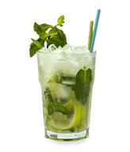
Przygotowanie Black Russian nie powinno przysporzyć większych trudności ani przy zakupie składników, ani przy samym przyrządzaniu drinka. Wystarczy wypełnić tumbler na lodzie, który jednocześnie będzie służyć jako naczynie do podania drinka, do połowy kostkami lodu. Następnie należy wlać 1,5 miarki wódki i 0,75 miarki likieru kawowego. Potem wystarczy już tylko bardzo delikatnie zamieszać drinka.
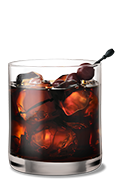
Do szklanki wrzucić lód, wlać wódkę i likier kawowy, zamieszać. Na wierzch wlać delikatnie po ściance lub łyżeczce mleczko. Można też wlać mleczko po prostu i zamieszać.
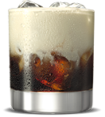
Do wypełnionej lodem szklanicy barmańskiej wlać składniki nie uwzględniając soku żurawinowego. Wlane składniki wstrząsnąć w shakerze przez ok 10s sek. Następnie zawartość przelać do uprzednio przygotowanej szklanki typu highball, bądź też fancy wypełnionej do połowy lodem. Następnie dolać tzw. splash, którym w tym momencie jest sok żurawinowy. Ozdobić drinka.
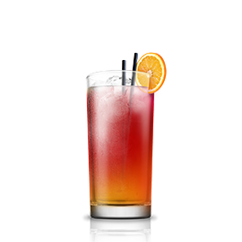
Do shakera wrzucamy kilka kostek lodu, zamykamy i potrząsamy żeby shaker się schłodził. Następnie otwieramy i wlewamy sok z cytryny lub limonki, wódkę oraz likier pomarańczowy Blue Curaçao. Gdy mamy już wszystkie składniki w shakerze, zamykamy go ponownie i potrząsamy dynamicznie, starając się trzymać shaker tylko palcami żeby nie przejmował ciepła naszych dłoni. Kiedy składniki schłodzą się i dobrze wymieszają, przelewamy naszego drinka, odcedzając lód do małych kieliszków (jak do wódki) i podajemy po kilka sztuk naszym gościom. Pijemy oczywiście do dna.
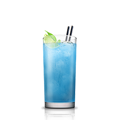
Drinki Bez Alkoholu
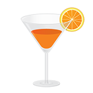
Wymieszaj sok pomidorowy z sokiem z cytryny i sosem Worcestershire. Dopraw do smaku Tabasco, solą oraz pieprzem. Do szklanek włóż po jednej łodydze selera i kilka kostek lodu. Zalej koktajlem i podawaj.
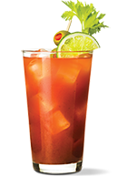
Mleko kokosowe, sok i kruszony lód wymieszać (można zblendować). Wlać do szklanek. Udekorować kawałkami świeżego ananasa i od razu podawać.
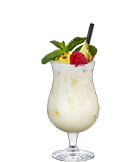
Najpierw obieramy marchewki, myjemy i kroimy na mniejsze części. Następnie wrzucamy do blendera lub sokowirówki i blendujemy, aby uzyskać z nich sok. Jeśli używamy blendera, wlewamy wodę, aby uzyskać lepszy efekt zmielenia i aby sok był rzadszy, a następnie wyciskamy go z powstałej masy. Wlewamy sok do miski, dodajemy szczyptę mielonego imbiru, gałki muszkatołowej oraz cynamonu, aby zaostrzyć nieco smak i wszystko razem mieszamy. Następnie wydobywamy pestki z wanilii i dodajemy do soku. Wlewamy 4 łyżki mleka skondensowanego, a następnie wszystko razem mieszamy, aby składniki dobrze się połączyły. Do wysokiej szklanki wsypujemy pokruszony lód i zalewamy go sokiem.
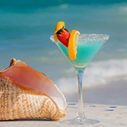
Zmieszaj w jednym naczyniu soki z grejpfrutów i cytryny, wstaw do lodówki na ok. godzinę. Tuż przed podaniem napoju dodaj do niego wodę sodową oraz cząstki grejpfruta.
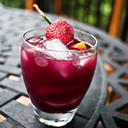
Umyj arbuza. Odkrój kilka plastrów do dekorcji. Z reszty wydrąż miąższ i wydłub pestki. Zblenderuj miąższ. Dodaj 1 szklankę wody mineralnej lub mniej - wedle upodobania, jeśli chcesz by drink był rzadszy. Wyciśnij sok z cytryny lub limonki i dodaj do napoju.
Możesz dodać trochę cukru lub miodu, jeśli chcesz by drink był słodszy.
Przelej drink do szklanek, wrzuć do nich dodatkowo kostki lodu.
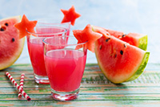
Moje Przepisy

Dodaj Nowy Przepis